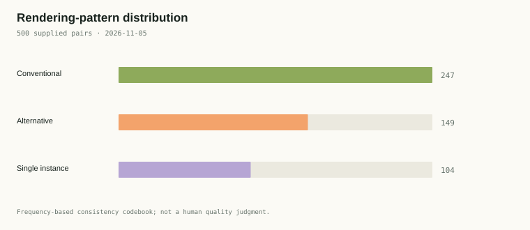
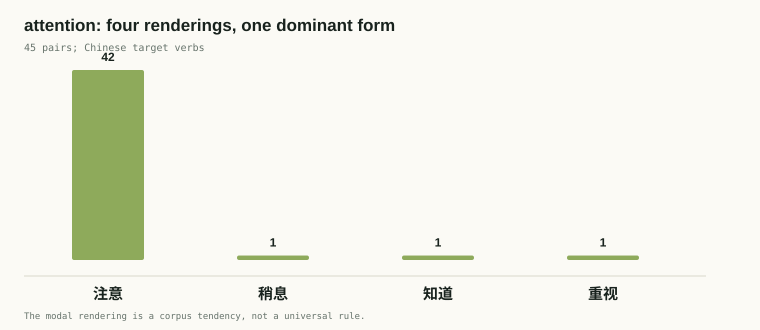

Origin
I wanted to study something that appears small enough to inspect but is difficult to settle with a simple rule: what happens when an English nominal is rendered as a Chinese verb? The supplied NV Atlas dataset gives each pair an English key nominal and a Chinese verb. That makes the gap visible in a way a generic subtitle concordance would not.
The project is therefore not a dictionary of “correct translations.” It is an exploration of consistency and variation in a 500-pair sample. The source file is the starting point; the analysis asks how its own categories travel across contexts.
我想研究一個看似很小、卻很難用單一規則解決的問題：當英文名詞被譯成中文動詞時，發生了什麼？所提供的 NV Atlas 資料集為每一組配對標出英文關鍵名詞與中文動詞，使這種落差比一般字幕索引更清楚可見。
因此，本專題不是「正確譯法」詞典，而是對 500 組配對中一致性與變異的探索。原始檔案是起點；分析要問的是，它自身的分類如何在不同語境中移動。
Background
Translation-studies work on lexical choice often treats consistency as a norm shaped by genre, register, and the immediate co-text. In subtitle-like material, the relevant unit is rarely an isolated noun. A term such as attention can become an instruction (“注意”), a military command (“稍息”), or a statement of awareness (“知道”). The supplied key-term labels make this kind of variation countable.
翻譯研究中有關詞彙選擇的討論，常把一致性視為受文類、語域與上下文塑造的規範。在字幕式材料中，相關單位很少是孤立的名詞。例如 attention 可以是提示（「注意」）、軍事口令（「稍息」），也可以是表示知悉（「知道」）。所提供關鍵詞標籤，使這種變異可以被計數。
Gap
Existing bilingual resources often show a preferred equivalent without showing how often alternatives appear or whether they cluster by context. A flat two-column list has the same limitation: it hides the difference between a stable rendering and a one-off adaptation. This project makes that difference the unit of analysis.
Important limitation. The supplied CSV does not state the source corpus version, retrieval URL, or sampling seed at sentence level. The site records the filename, row number, collection date, and SHA-256 hash, but it cannot verify provenance that is absent from the source. Those fields must be supplied or checked by the project owner before submission.
現有雙語資源常只列出首選對應詞，卻不顯示替代譯法出現的頻率，也不顯示它們是否依語境聚集。平面的兩欄清單同樣有此限制：它隱藏了穩定譯法與一次性調整之間的差異。本專題把這個差異本身當作分析單位。
重要限制。 所提供的 CSV 沒有在句子層級說明語料庫版本、擷取網址或抽樣種子。本網站記錄檔名、行號、收集日期與 SHA-256 雜湊值，但無法驗證原始檔中沒有的來源資訊。提交前必須由專題擁有者補上或核實這些欄位。
Questions
- How often does one English key nominal receive multiple Chinese verb renderings?
- Which renderings dominate, and where do alternatives appear?
- What can a linked, filterable view reveal that a flat CSV cannot?
- Which limitations of the supplied data remain visible even after cleaning?
- 同一個英文關鍵名詞有多常出現多個中文動詞譯法？
- 哪些譯法佔主導，替代譯法又在哪裡出現？
- 連結式、可篩選的視圖能揭示平面 CSV 看不到的什麼？
- 即使清理之後，原始資料的哪些限制仍然可見？
Method
The build pipeline reads the supplied CSV as UTF-8, normalises whitespace, checks required fields, and retains all 500 rows for auditability. Eight exact duplicate pairs are flagged rather than silently deleted, so the explorer can match the supplied data. The source file's SHA-256 is 8df6e60e767bc411c180860dab290272f2210db5711a702b39f2ad88057f00a3.
Categories are computed with a reproducible consistency rule: for an English key term appearing at least twice, the Chinese rendering with the largest frequency is marked conventional; other renderings are alternative; terms occurring once are single instance. This is a corpus description, not a quality label.
| Input | 500 supplied rows; fields: id, English, Chinese, English_Nominal, Chinese_Verb |
| Cleaning | Whitespace normalisation, required-field check. Duplicate pairs are flagged, not removed. |
| Category rule | Modal rendering for repeated nominal = conventional; other repeated-term renderings = alternative; singleton = single instance. |
| Manual check | Not claimed. All rows are marked human_checked = no until the project owner verifies them against the original source. |
| Model evidence | Script profiles flag 37 entries as mixed or mostly traditional; 16 entries contain untranslated Latin text. |
This pipeline is intentionally conservative. It does not invent source metadata, remove inconvenient examples, or mark entries as checked by a human. Those are deliberate boundaries, not missing features.
建置流程以 UTF-8 讀取原始 CSV、正規化空白、檢查必填欄位，並保留全部 500 列以供稽核。八組完全重複的配對會被標記，不會被默默刪除，讓探索器能對應所提供資料。原始檔案的 SHA-256 為 8df6e60e767bc411c180860dab290272f2210db5711a702b39f2ad88057f00a3。
分類採用可重現的一致性規則：出現至少兩次的英文關鍵詞，以頻率最高的中文譯法標為慣用；其他譯法標為替代；只出現一次的關鍵詞標為單一例子。這是語料描述，不是品質標籤。
| 輸入 | 所提供 500 列；欄位：id、English、Chinese、English_Nominal、Chinese_Verb |
| 清理 | 正規化空白、檢查必填欄位。重複配對會標記，不會刪除。 |
| 分類規則 | 重複名詞的最高頻譯法為慣用；其他重複詞項譯法為替代；單次詞項為單一例子。 |
| 人工核對 | 不作宣稱。專題擁有者對照原始來源核實前，全部列皆標為 human_checked = no。 |
| 模式證據 | 37 列被標為混合或偏繁體；16 列的目標文字含未翻譯拉丁字母。 |
此流程刻意保守：不虛構來源資料、不刪除不利例子，也不把條目標為人工已核對。這些是明確的界線，而非缺漏功能。
Analysis
The Rendering network shows terms by frequency and links them to Chinese renderings. The most frequent nominal, attention, occurs 45 times and has four recorded renderings. The dominant rendering, 注意, accounts for 42; 稍息, 知道, and 重视 each occur once. This is the clearest case of local convention with contextual outliers.
The Pattern distribution chart applies the codebook to the current filter: 247 entries are conventional, 149 alternative, and 104 single-instance. These counts are derived directly from the visible table; changing a filter recalculates them together.


The Term × rendering heatmap reveals concentration rather than just totals. protection is stable at 12/12 保护; permission is less settled, with 12 允许 and four other renderings. The Bilingual KWIC then returns to context: the same nominal can appear in a command, a polite formula, or a narrative sentence.
Several data-quality signals complicate the reading. 16 Chinese targets contain Latin text, and 37 entries show mixed or mostly traditional script against a predominantly simplified dataset. These are reasons to treat the categories as exploratory. The clean, reproducible rule makes disagreement visible; it does not settle whether each variant is justified.
譯法網絡圖按頻率呈現詞項，並連到中文譯法。最高頻的名詞 attention 出現 45 次，記錄了四種譯法。主導譯法「注意」有 42 次；「稍息」、「知道」、「重视」各一次。這是局部慣例與語境例外並存的最清楚例子。
模式分佈圖把分類準則套用到目前篩選結果：247 列為慣用、149 列為替代、104 列為單一例子。這些數字直接由可見表格計算；改變篩選時會一起重算。
詞項 × 譯法熱力圖顯示的是集中程度，而不只是總數。protection 在 12/12 中穩定譯為「保护」；permission 則較不穩定，12 次「允许」之外還有四種譯法。雙語 KWIC 再把讀者帶回語境：同一個名詞可以出現在指令、禮貌公式或敘述句中。
幾項資料品質訊號令解讀更複雜：16 個中文目標含拉丁文字，37 列在偏簡體資料中呈混合或偏繁體書寫。這些都是把分類視為探索性結果的理由。清楚、可重現的規則讓差異可見，但不會判定每個變體是否合理。
Conclusion
The site turns a flat list into an argument about stability and context. It achieves a searchable and filterable corpus, linked visualizations that update together, a bilingual interface, a codebook, and a transparent report. Its most important conclusion is also a caution: dominant renderings are real patterns, but they are not universal rules.
本網站把平面清單轉化為關於穩定性與語境的論證。它提供可搜尋、可篩選的語料庫、同步更新的連結式視覺化、雙語介面、分類準則，以及透明的報告。最重要的結論同時也是提醒：主導譯法確實是模式，但不是普遍規則。
Reflection
The hardest part was distinguishing what the dataset shows from what it claims. A frequency count is easy; deciding whether a rendering is a convention, an adaptation, or an extraction error requires context and human judgment. AI could build the interface, calculate counts, and expose inconsistencies. It could not verify absent provenance or certify entries as manually checked.
If I continued the project, I would first recover the exact source version, sampling method, and seed; then manually verify a random sample; then refine the codebook with inter-annotator notes. I would also standardise the Chinese script only in the interface, never silently in the corpus.
最困難的是區分資料顯示了什麼，與資料宣稱了什麼。頻率計算很容易；判斷一個譯法是慣例、調整，還是抽取錯誤，則需要語境與人的判斷。AI 可以建立介面、計算數字、揭露不一致；它無法核實不存在的來源資訊，也無法把條目認證為人工已核對。
若繼續此專題，我會先找回確切的來源版本、抽樣方法與種子；再隨機人工核對；然後依據標註者間筆記修訂分類準則。我也會在介面上統一繁體中文，但絕不會在語料本身默默改寫。